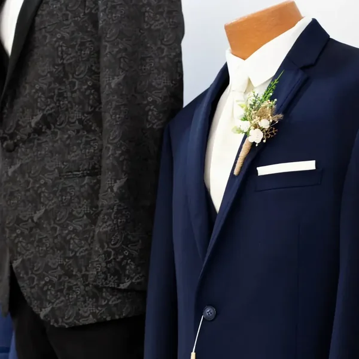

The Trace
Collection.
Named in honor of our owner's son, The Trace Collection embodies masculine confidence, refined tailoring, and timeless celebration.
We pair in-store styling at our Peoria boutique with direct nationwide home delivery through our official partnership with Jim's Formal Wear.

Built for the Moment
Whether you're standing at the altar or attending black tie, our formalwear options offer clean lines, lightweight comfort, and effortless coordination.
Ultra Slim, Slim & Modern Fits
Precision cuts in lightweight stretch wools and premium fabrics. Available for rental or purchase in sizes ranging from boys to big & tall.
Tux-to-Door Delivery
Out-of-town groomsmen submit sizing online and receive their suits on their doorstep 7–10 days before the wedding with prepaid return packaging.
Bridal Party Palette Matching
Direct swatch and accessory coordination to seamlessly complement Cloud Nine bridal gowns, bridesmaid colors, and wedding floral themes.
How Outfitting Works
Four simple steps from your initial styling appointment to seamless post-wedding return.
Groom Styling
Visit Cloud Nine in Peoria for your personal consultation. Select cuts, lapels, vests, ties, and pocket squares.
Party Sizing
Your groomsmen submit measurements online or get measured complimentary at any formalwear store nationwide.
Home Delivery
Suits arrive at each party member's home 7–10 days early, giving ample time for a trial try-on and fit check.
Prepaid Return
After the big day, simply drop off garments at Cloud Nine or place them in any USPS mailbox with the included prepaid label.
Explore the Full Jim's Formal Wear Catalog
Browse dozens of additional designer styles, build custom color swatches, or manage your wedding party lookbook directly through our Jim's Formal Wear digital portal.
Ready to Outfit Your Groom & Crew?
We recommend scheduling your group styling appointment 3–5 months before the wedding to ensure guaranteed sizing, swatch matching, and seamless delivery.